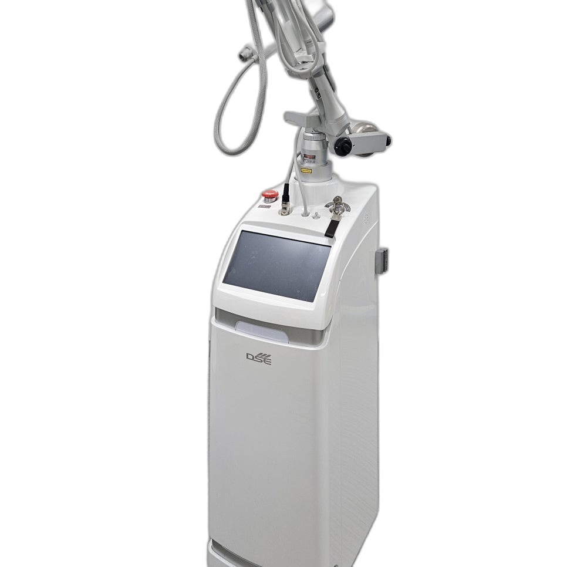

안녕하세요.
후한의원 강남점 민수연 원장입니다.
강남 편평사마귀치료를 알아보실 때 가장 많이 비교하시는 것이 냉동치료와 레이저 치료입니다.
두 방법의 원리와 재발률 차이를 정리해드리겠습니다.
냉동치료의 원리

액화질소를 이용한 냉동치료는 영하 196도에 가까운 극저온으로 사마귀 조직을 얼려 세포를 괴사시키는 방식입니다.
시술이 비교적 간단하고 빠르지만, 사마귀 조직 깊숙한 곳까지 고르게 얼리기 어려워 여러 차례 반복해야 하는 경우가 많습니다.
강남 편평사마귀치료를 위해 냉동치료만 단독으로 진행하시는 분들 중 재발을 겪는 경우가 적지 않은 이유이기도 합니다.
레이저 치료의 원리
CO2 레이저는 조직을 정밀하게 태워 제거하는 방식으로, 원하는 깊이와 범위를 비교적 정확하게 조절할 수 있습니다.
돌기의 크기나 형태에 맞춰 조사 강도를 조절할 수 있어, 냉동치료보다 한 번의 시술로 제거되는 비율이 높은 편입니다.
강남 편평사마귀치료 상담을 오시는 분들께 레이저 치료의 장점을 설명드릴 때 이 부분을 가장 강조합니다.
재발률의 차이
국내 학회 자료에 따르면 사마귀 치료 후 재발률은 치료 방법과 관계없이 적지 않게 보고되고 있는데, 이는 바이러스가 눈에 보이지 않는 주변 피부에도 잠복해 있을 수 있기 때문입니다.
냉동치료는 조직을 얼리는 데 그치기 때문에 바이러스가 완전히 제거되지 않고 남아 있을 가능성이 상대적으로 높다고 알려져 있습니다.
레이저 치료는 조직을 태워 제거하는 만큼 제거율은 높지만, 역시 눈에 보이지 않는 잠복 바이러스까지 없애지는 못합니다.
결국 중요한 것은 면역 관리
두 시술 모두 눈에 보이는 사마귀를 제거하는 데는 효과적이지만, 재발을 막으려면 몸의 면역 체계가 바이러스를 억제할 수 있도록 함께 관리하는 것이 중요합니다.
강남 편평사마귀치료를 고민 중이시라면, 시술 방법뿐 아니라 재발 방지를 위한 면역 관리까지 함께 살펴보는 곳인지 확인해보시길 권해드립니다.
후한의원 강남점은 도산대로 110 지하 1층에 위치해 있으며, 강남 편평사마귀치료 상담은 02-543-9696으로 문의하실 수 있습니다.
#강남편평사마귀 #강남편평사마귀치료 #후한의원강남점 #냉동치료 #CO2레이저 #재발률